- Módulo: Administración de Sistemas Operativos
- Título del trabajo
- Componentes del grupo: Alejandro Garcia Yumar
- Curso Académico: 2015/2016
- Fecha de entrega: 27/02/2014
El ejercicio consiste en instalar los programas gwak y xcacls, y utilizarlos para el registro de usuarios automaticamente en un active directory con un script.
Intalamos el gwak desde su sitio oficial.
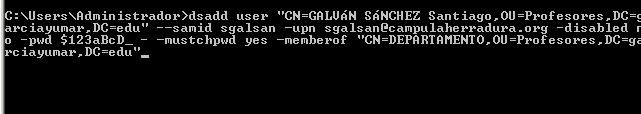A continuacion las distintas capturas de su instalacion.
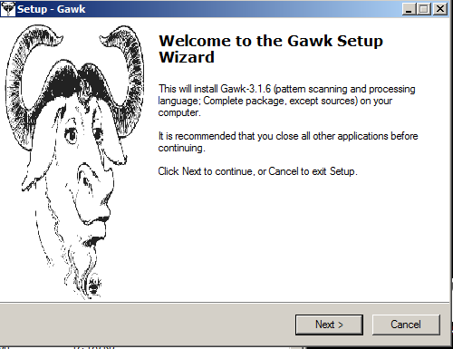 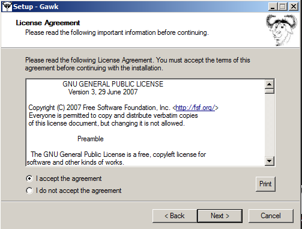 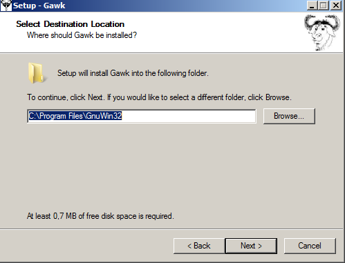 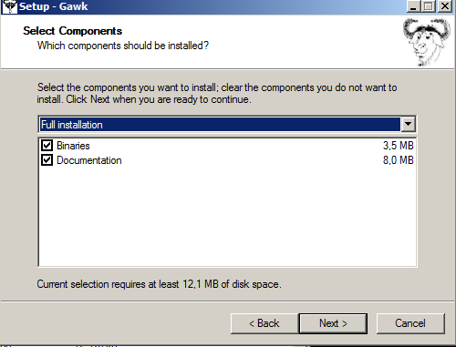 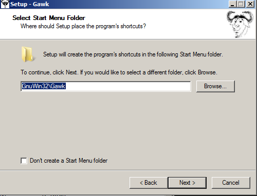 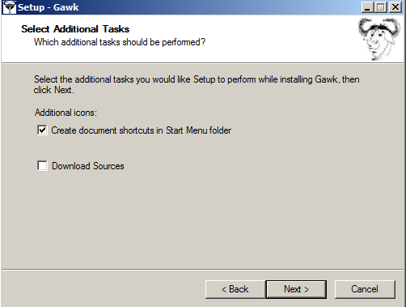 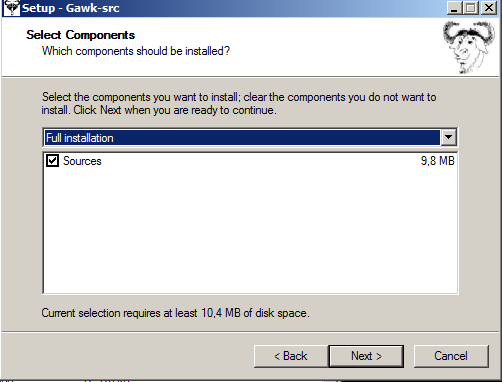Intalamos el xcacls y lo descomprimimos en c:/windows para su utilizacion.
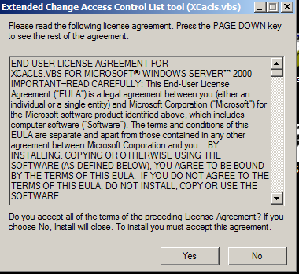 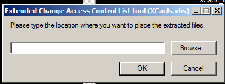Ahora debemos dirigirnos a propiedades del sitema/variables del entorno y editamos la variable path como la de la imagen para que se pueda ejecutar desde cualquier sitio, recordando colocar la coma al final de la palabra bin.
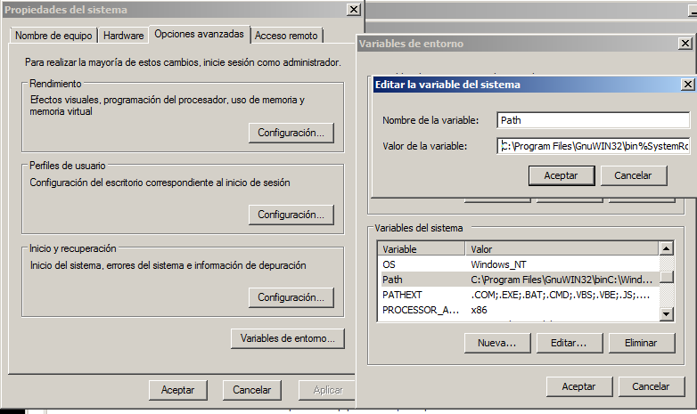Seguido a lo anterior debemos modificar el documento en c:\windows\XCACLS.vbs y buscar la funcion IsOsSupported() y añadir los datos mostrados abajo.
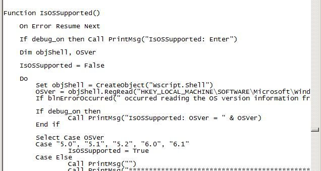Ejecutamos el comando mostrado a continuacion en un cmd; debemos poner el final del codigo algun parametro como ? para que no nos salte el error de la segunda imagen.
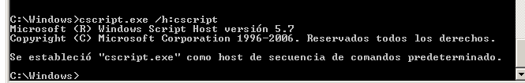 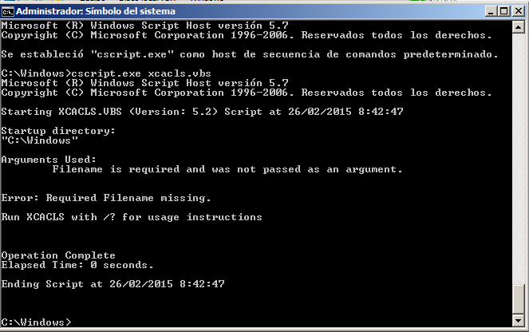 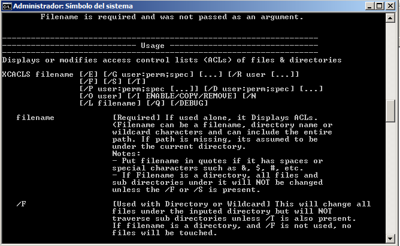Seguimos con la configuracion de los scripts de creacion; primero con el que contendra a los usuarios de el directorio activo.
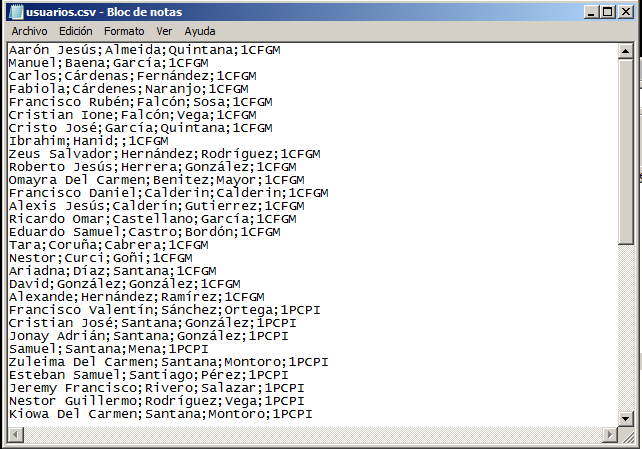Creamos el documento en que nos encargaremos de dar de alta a los usuarios.
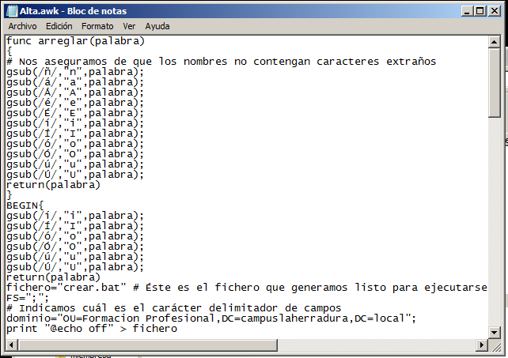Como se copia este escript debemos modificarlo teniendo en cuenta que los caracteres como '-q' se pueden copiar mal, temiendo que volver a escribirlos.
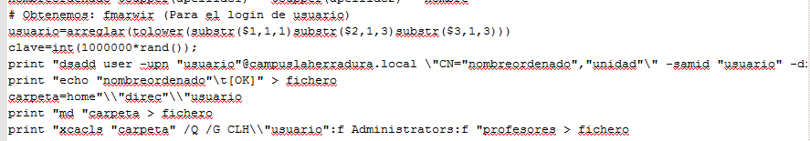Tener en cuenta que debemos sustituir el dominio que tiene de ejemplo el script por el nuestro propio, y crear el OU "Formacion Profesional".
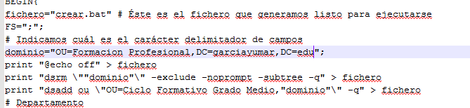 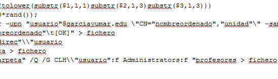 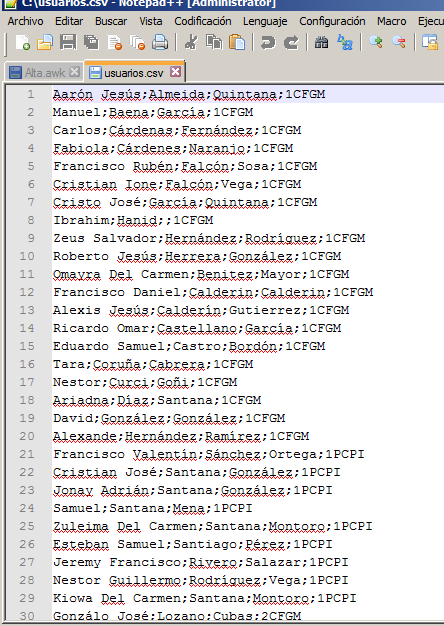Ahora ejecutamos awk -f alta.awk usuarios.csv; si nos equivocamos al escribirlo nos dara un error y nos lo creara vacio.
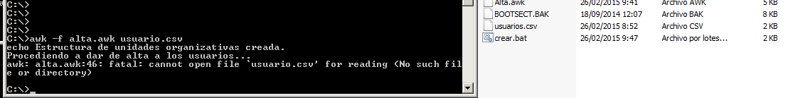Si nos quedo algun parametro sin corregir del PDF nos dará el siguiente error al usar el crear.bat .
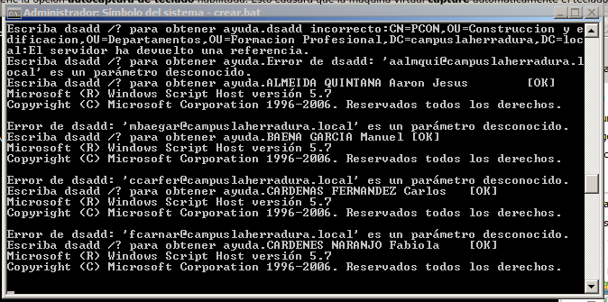Si todo a ido bien al ejecutarlo nos deberia crear todos los usuarios y los distintos apartados.
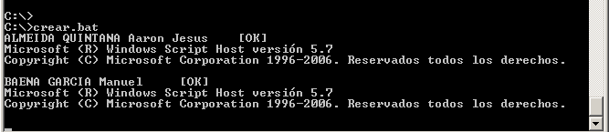 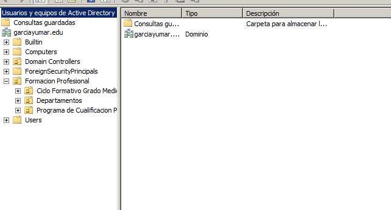